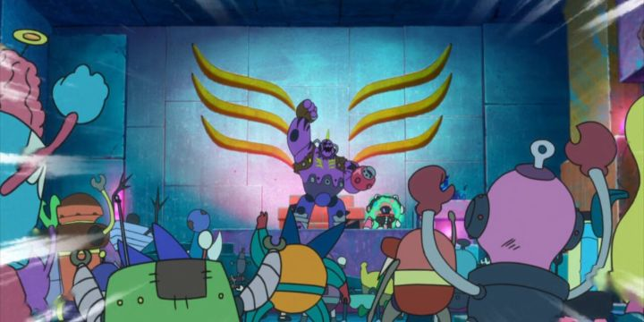

Disclaimer: Spoilers in this review.I was quick to put "Deca-Dence" on my watchlist. Original fantasy / sci-fi anime don't come around often as they used to. From the promotional materials, this one felt like it was in the spirit of "Last Exile" and "Fractale," which were certainly flawed, but inspirational in what they attempted. In this action-adventure, alien monsters called Gadolls have mysteriously appeared and wiped out most of the human race. Centuries later, those that remain live on a moving fortress called the Deca-Dence, training the best of them to become warriors called "Gears," hunting as many of the Gadolls as they can and harvesting them for parts and food. The rest of the humans act as "Tankers," helping with harvest, clean-up, and maintenance when the the Gears finish their jobs. A teenage girl named Natsume is eager to prove herself worthy to be a Gear soldier, after losing her arm and father to a Gadoll attack as a child. No one gives her a chance, putting her on outside cleaning duty under a stern and boring boss named Kaburagi. After a massive attack goes wrong, Kaburagi swoops in and reveals he's one of the best fighters in the population, despite having chosen the quiet life as a Tanker. With the cat out of the bag, he reluctantly agrees to mentor Natsume to fight the Gadolls herself, and together they have a chance to end the Gadoll war once and for all, and finally return the Earth to a place humanity can live in peace. .Also, Episode 2 reveals the fortress is an elaborate "reality-based" live-service video game that a separate species of A.I. cyborgs plays for fun. They take over select human bodies as avatars, and the real humans are seen as NPC's that serve the "story."... yep, I didn't see that coming either. The thing is, anime has done the whole "humanity fighting to survive" story plenty of times, and I wasn't expecting more than that. It's also done the "isekai" genre to death, of humans finding a new life in a video-game-like world. Had I expected it going in, I might have had a different reaction, but I felt blindsided with the twist. The cyborg world is especially cartoon-y too in their visuals and humour (it's portrayed as a "Wall-e"-style corporation selling the game for commercial gain), a stark contrast to the seriousness of the human world. It turned out "Deca-Dence" is a lot more like "Gargantia on the Verdurous Planet" and "Space Dandy" than what I expected. At first, it wasn't clear that this mashup choice lent any benefits to the story and the Gadoll war. However, I became more convinced about halfway through. Kaburagi happens to be not only a cyborg avatar playing the game, but a special member tasked with wiping out "bugs" in the game (basically, any humans that prove to risk breaking the game's pre-determined story and ruining the developers' mission plans). There's even a cool Agent-Smith-style villain running the game's stability squad. Natsume's ambitions can't be ignored by the cyborgs, but Kaburagi's stuck with conflicting motivations. When they come close to succeeding to save the human race, it throws the cyborgs in flux, forcing them to act. Beyond the tense excitement of the monster battles, the added story-threads make things unpredictable and engaging.  A recurring theme across multiple partner characters is fighting against the system and claiming your freedom, versus being satisfied with the status quo, and fighting to preserve what little you have against the possibility of change. That dynamic is unique for each of the characters it occurs in. Their characterization and conflicts help with the show's writing. Ultimately, it's not all great writing, and the choice to make it about video games ensure it won't age well, but it's novel and entertaining. The production was done by studio NUT, a relatively new group that previously only worked on "Tanya the Evil." The promotional image of Natsume falling through the skies with her flight gear is striking, but design choices are all over the place elsewhere, from generic designs for the humans and bizarrely comical designs for the cyborgs. Animation is also limited most of time, perhaps more acceptable had it broadcast a decade earlier, but not in 2020. It relies on 3D CGI models whenever it's convenient, and comes across as cheap. A few knockout action scenes are exceptions, and look as if the tired animators got a dose of caffiene that week, but in a show with this much action, it's a shame that quality didn't carry for all of them. You can watch the last five minutes of the first episode to catch the best the show looks. Perhaps it was just me, but I was impressed with the music, both the opening and ending themes and the background score itself. It's appropriately cinematic and given proper care with the editing. Funimation's (or rather, Crunchyroll's) English dub is workman-like, but both Kaburagi and Natsume have strong personalities that sound good, elevating the result to be respectfully solid. "Deca-Dence" might not be what I expected it to be, but it's still a an original (surprisingly so) story and world with entertaining characters. It builds to an exciting climax, and perhaps more importantly, to a fairly complete ending. No one element of the show is particularly great, as if it was manufactured by a factory with the intention to entertain and distract. But everything is solid enough to surpass most original sci-fi-action anime, and maybe that's enough to be a willing participant.
- "Ani" More reviews can be found at : https://2danicritic.github.io/ Previous review: review_Death_Parade Next review: review_Decorado